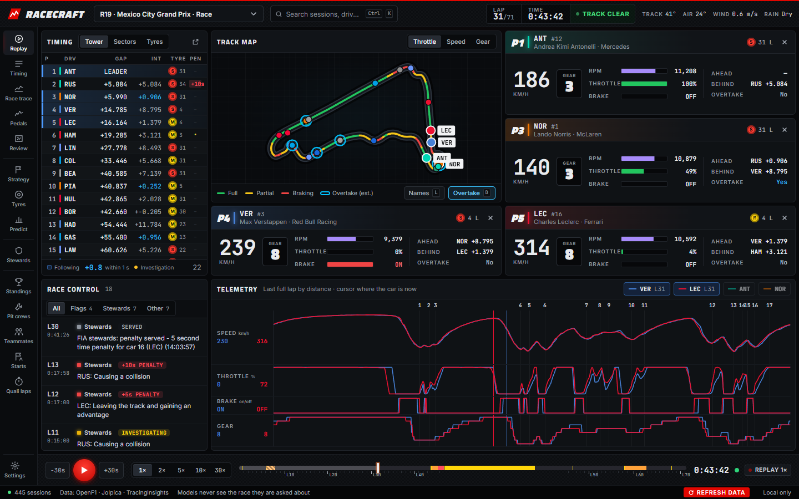
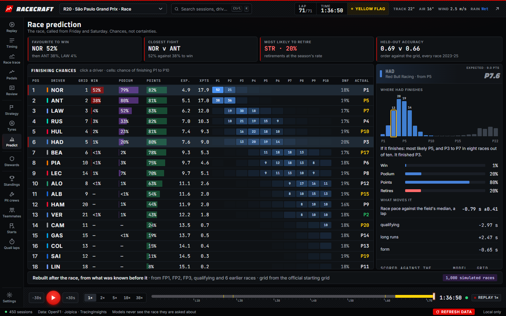
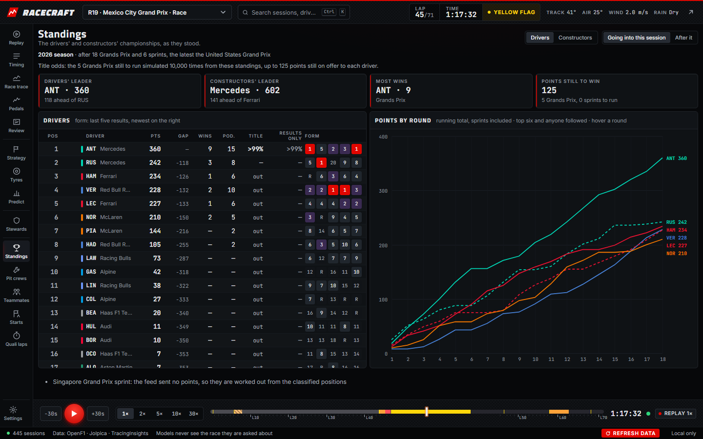

Every F1 session since 2023, on your own computer.
Replay any session with full telemetry, compare drivers lap by lap, and predict the race before it starts.
Download for WindowsFree. Windows 10 or 11, 64-bit. 141 MB.

A race prediction you can check
A thousand simulated races, built from Friday, Saturday and each driver's form. Each one uses only what was known before the race, and is scored against what happened.

0.69 rank correlation with the real finishing order across every race from 2023 to 2025, against 0.66 for assuming everyone finishes where they started. 1 would be a perfect call. It is a small edge, and the app shows its score on every race.

The whole season, explained
Beyond the replay, Racecraft reads each race the way a strategist would.
- Standings
- Title odds, from the rest of the season simulated 10,000 times.
- Strategy and tyres
- Ranked pit plans, tyre wear and the sets each driver has left.
- Review
- Passes on track, and the places won or lost at each stop.
- Pit crews and team-mates
- Each crew's stops and each pairing, compared across the year.
- Stewards
- Penalties and investigations, at the moment they happened.
You choose how much to download
The app holds no race data until you open it. It then asks how much you want and fetches it from free public sources, newest race first. You can use it while it downloads.
| Your choice | Time | Disk space |
|---|---|---|
| The last 5 races | About 1.5 hours | 100 MB |
| The latest whole season | Up to 6.5 hours | 450 MB |
| Everything since 2023 | About 24 hours | 1.6 GB |
Times depend on your connection. It only downloads while Racecraft is open, and carries on from where it stopped. You can get more at any time in Settings.
Installing it
- Download the zip file above.
- Unzip it to any folder. Right-click it, then choose Extract All.
- Open Racecraft.exe in that folder, and choose how much data you want.
Windows will probably warn you
Racecraft is not signed with a paid certificate yet, so SmartScreen may say "Windows protected your PC". To carry on, choose More info, then Run anyway. If you would rather check first, the source code is public.
No account, no tracking
No sign-up and no ads. The app asks public sources for race data and sends nothing about you. What it downloads stays on your own disk, and it answers only your own computer.
Where the data comes from
Racecraft stands on free public work: FastF1, OpenF1, Jolpica F1, TracingInsights, f1db and weather data by Open-Meteo.com.